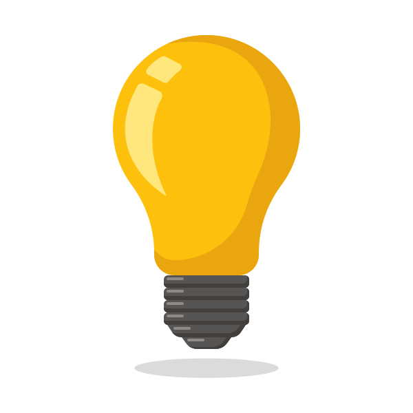
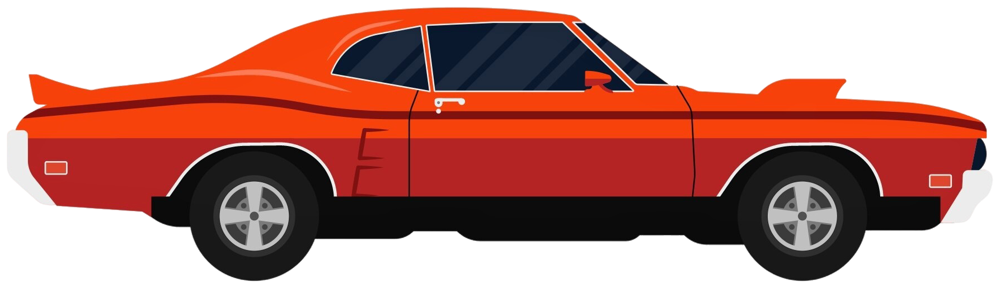
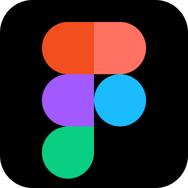
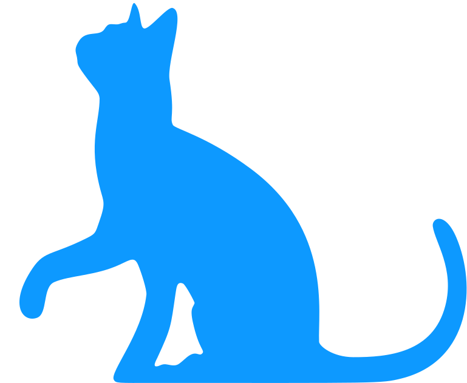
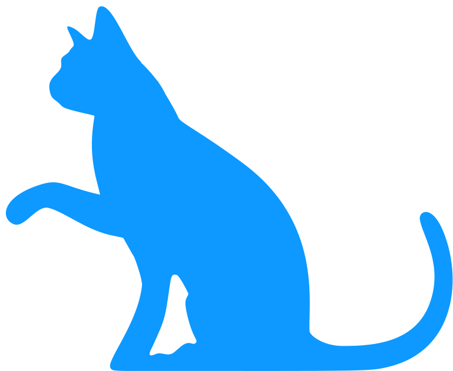
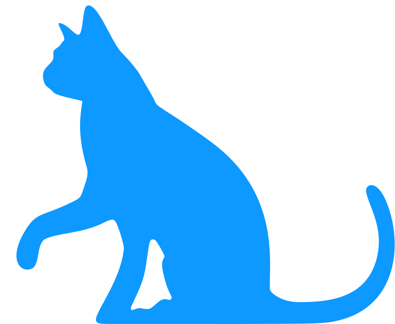

Four years designing products, most of them as the only designer on the project.
TikTok Shop analytics, betting platforms, and the systems underneath them.
Scroll ↓
Curiosity is what drives how I work.


It shows up early. I ask why a flow works the way it does, or whether a feature is solving the right problem, before anyone startsbuildingFrame 1404. That's often where I can make the biggest difference.
That's also why I've spent the last year bringing AI into my process

not as a shortcut, but as another way to dig deeper into problems, explore more possibilities, and get from an idea to something tangible faster.
Because good ideas only matter when they work, I collaborate closely with developers and stakeholders to turn them into products people can actually use.



Curiosity is what drives how I work. It shows up early. I ask why a flow works the way it does, or whether a feature is solving the right problem, before anyone starts buildingFrame 1404. That's often where I can make the biggest difference. That's also why I've spent the last year bringing AI into my process not as a shortcut, but as another way to dig deeper into problems, explore more possibilities, and get from an idea to something tangible faster. Because good ideas only matter when they work, I collaborate closely with developers and stakeholders to turn them into products people can actually use.